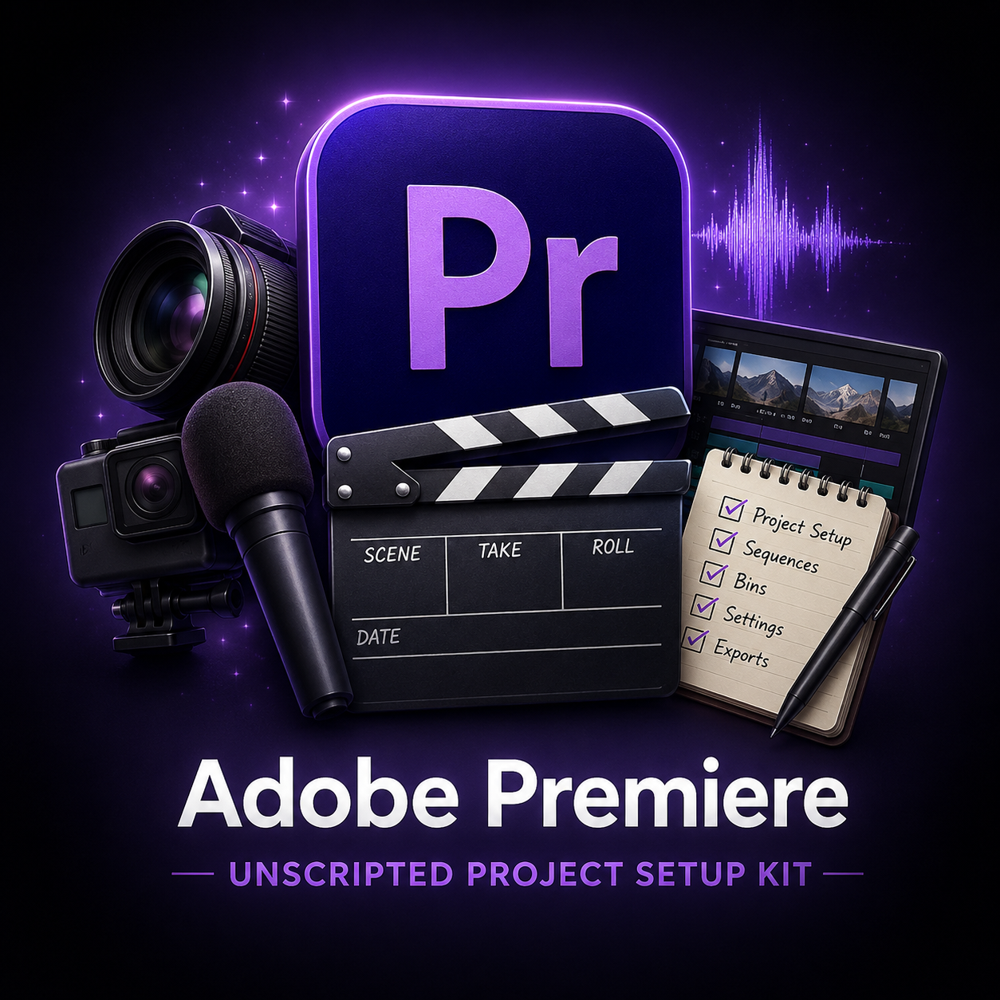
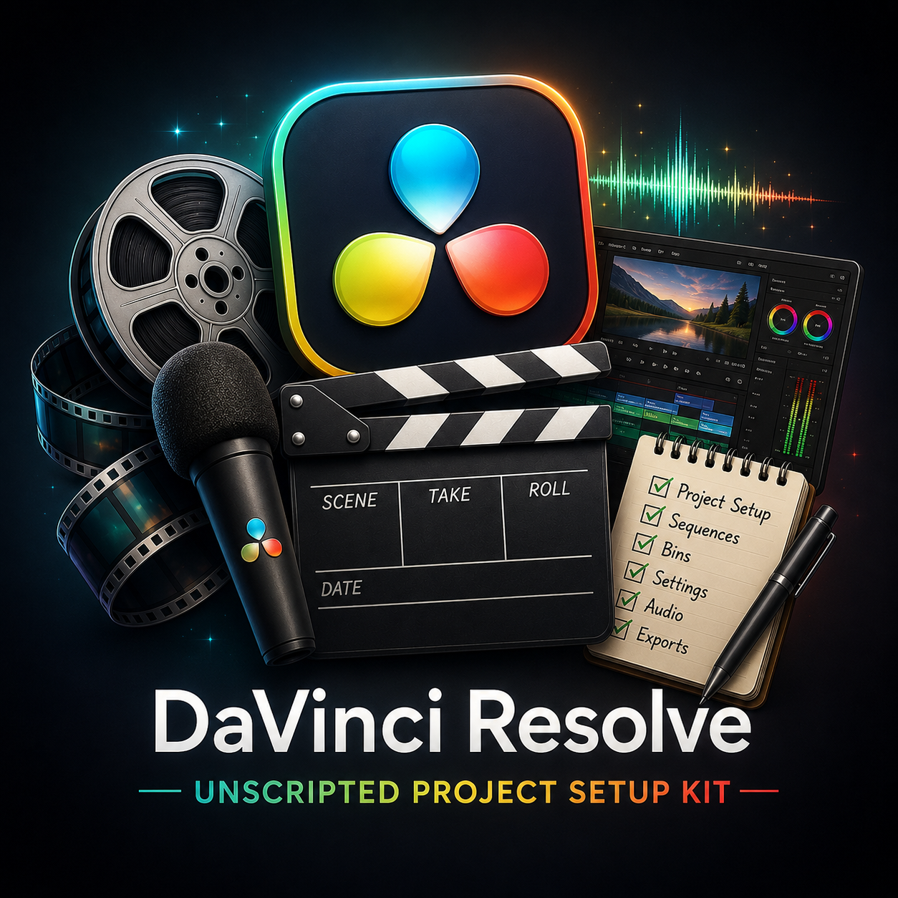
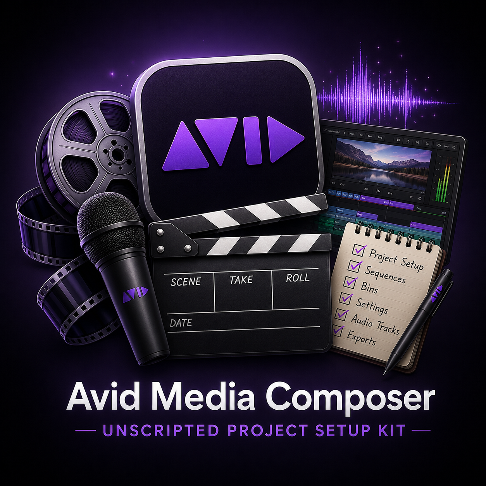

01
MEDIA PREP
Create Transcodes
PROCESSING
DNxHR proxies · Relink-safe workflow · Media prep
72%
Post production operations, streamlined.
From transcodes and sync maps to exports, turnovers, and media prep, PostOpz manages the workflow operations that keep productions moving while editors focus on storytelling.
DNxHR proxies · Relink-safe workflow · Media prep
Audio sync · Multicam grouping · Editor-ready bins
Frame.io upload · Burn-ins · Versioning
AAF export · Split tracks · Turnover prep
BUILT AROUND THE SOFTWARE ALREADY DRIVING MODERN POST PRODUCTION.
From media intake and transcodes to sync maps, turnovers, review exports, and delivery prep, PostOpz handles the workflow operations that keep productions moving while editors stay focused on the story.
Media Intake
Transcodes
AE Operations
Turnovers
PostOpz workflows are based on real-world assistant editor, editor, and post-production experience across documentary, reality, competition, branded, and streaming productions.
Choose the level of operational coverage your production needs: overflow assistant editor support, embedded workflow support, or managed cloud editorial infrastructure.
Production-ready project templates, organizational systems, and workflow documentation built from real-world documentary, television, and streaming post-production environments.
Choose any two project setup kits and build the workflow stack that matches your editorial environment.
Build BundleGet all three kits: Avid Media Composer, Adobe Premiere Pro, and DaVinci Resolve workflow systems.
Get Complete Bundle
Adobe Premiere ProA production-ready Adobe Premiere Pro project template designed for documentary, reality, branded, and unscripted workflows.

DaVinci ResolveA production-ready DaVinci Resolve project template designed for documentary, reality, branded, and unscripted productions.

Avid Media ComposerA production-ready Avid Media Composer project template built for documentary, reality, competition, and unscripted workflows.
From transcodes and project organization to review exports, turnovers, cloud infrastructure, and delivery support, PostOpz provides the operational coverage modern post teams need.